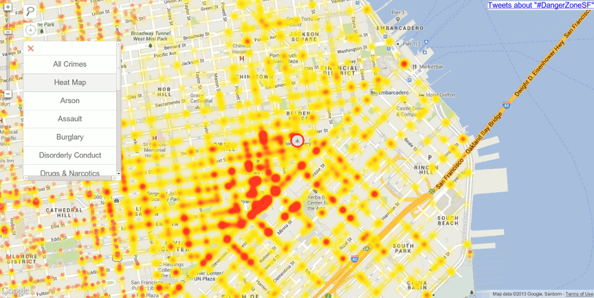
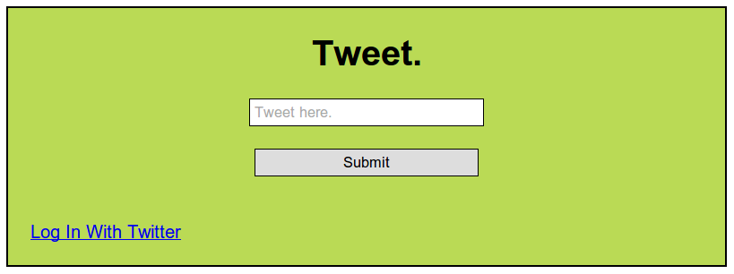

ChrisMal.in
Web Developer
About Me:
I am a programming enthusiast and recent transplant to San Francisco who loves challenges and solving problems. Previously, I worked for 10 years in the telecommunications industry climbing my way up from Technician to Technical Training Specialist. After years of self taught programming in a variety of languages, I made the leap, in more ways than one from trainer to developer and Florida to California, to become a world class beginner in web development via Dev Bootcamp. Excited to put my newly minted skills to use, I am seeking a position as a Full Stack Developer with a company that will challenge me while I continue to grow and learn every day.
Experience
Dev Bootcamp
San Francisco, Ca
Feb 2013 – May 2013
12 intense weeks developing software engineering skills
Learned – Ruby, Rails, Sinatra, AJAX, Heroku, Testing, Postgres, OAuth, RESTful APIs
Improved – Javascript, jQuery, CSS
Practiced - TDD, Agile Development, Pair Programming
San Francisco, Ca
Feb 2013 – May 2013
12 intense weeks developing software engineering skills
Learned – Ruby, Rails, Sinatra, AJAX, Heroku, Testing, Postgres, OAuth, RESTful APIs
Improved – Javascript, jQuery, CSS
Practiced - TDD, Agile Development, Pair Programming
Bright House Networks
Maitland/Daytona Beach, Fl
Jan 2003 – Feb 2013
Technical Training Specialist
Developed and taught training programs for new hires and existing technical employees
Implemented training programs used nationally across the company
Developed, designed and launched a wiki for field technicians
Developed a Blackberry app and later, a mobile web app to help technicians troubleshoot issues in the field
Other positions held: Technical Specialist, Broadband Installation Technician
Maitland/Daytona Beach, Fl
Jan 2003 – Feb 2013
Technical Training Specialist
Developed and taught training programs for new hires and existing technical employees
Implemented training programs used nationally across the company
Developed, designed and launched a wiki for field technicians
Developed a Blackberry app and later, a mobile web app to help technicians troubleshoot issues in the field
Other positions held: Technical Specialist, Broadband Installation Technician
Browning Communications
Debary, Fl
Mar 2002 – Dec 2002
Web Developer/Network Administrator
Designed and maintained web pages and databases for off-site clients
Maintained and managed office network and Microsoft Windows NT server
Debary, Fl
Mar 2002 – Dec 2002
Web Developer/Network Administrator
Designed and maintained web pages and databases for off-site clients
Maintained and managed office network and Microsoft Windows NT server
Here are a few projects I've worked on in the past.
SafeSF.com
-
Project Goals:
- Use San Francisco's open data platform to gather and parse data from police reports filed in the city.
- Use the browser's geolocation data to show the user's location on the map.
- Change the user's location icon color to indicate a "danger" rating based on the type/quantity of crime data in close proximity to their current location.
-
Technologies Used:
- Ruby On Rails
- RSpec
- Unix Cron Jobs
- JQuery
- DataSF API
- Twitter API
- Google Maps API
Tweet Later
-
Project Goals:
- A user can log-in to their Twitter account using the webapp.
- They can then submit a tweet, and choose a later time for it to be posted to Twitter. Yeah, I know the color choice wasn't great, it's #BADA55!
-
Technologies Used:
- Sinatra
- Sidekiq
- oauth
- Twitter API